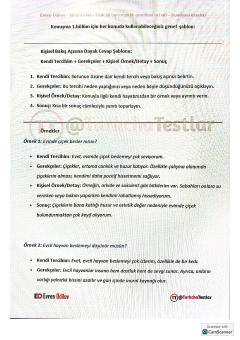

TKTurk tilida erkin va to'g'ri so'zlashish uchun amaliy qo'llanma.
Ushbu qo'llanma turk tilida so'zlashuv ko'nikmalarini rivojlantirish uchun mo'ljallangan amaliy tavsiyalar va qoliplarni o'z ichiga oladi. Kitobda turli mavzularda fikr bildirish, shaxsiy tajriba va kuzatuvlarni ifodalash uchun maxsus javob shablonlari keltirilgan.